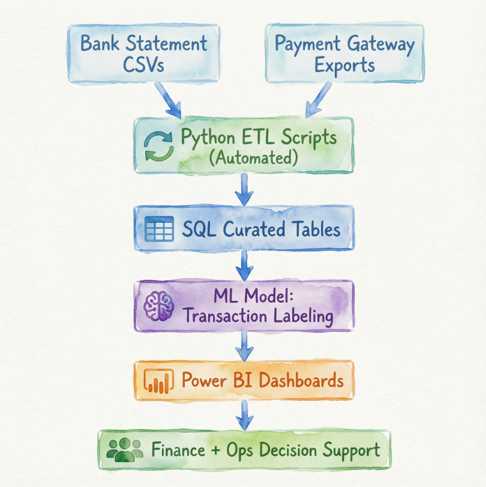

Project Overview
During my internship at Tzu Chi Foundation Singapore, I built an end-to-end pipeline that ingests bank + payment gateway data, curates it in SQL, and delivers daily cash visibility via Power BI. On top of the pipeline, I added a human-in-the-loop ML classifier to auto-label transactions, reducing manual reconciliation effort while keeping control, auditability, and safe review flows.
Before vs After
Before
- Cash position visibility arrived late
- Multiple files, inconsistent formats
- Manual reconciliation, high effort
- Knowledge lived in people, not systems
After
- Daily cash visibility in Power BI
- Standardised SQL curated tables
- ML-assisted labeling with review queue
- Designed for handover & scaling
The Story (4 Steps)
1
Problem
Cashflows existed — but operational clarity came too late.
→
2
Visibility
Automated ingestion + SQL curation + dashboards = single source of truth.
→
3
Intelligence
Human-in-the-loop ML: auto-label when confident, flag for review when unsure.
→
4
Impact
Less manual work, faster reconciliation, better decisions, sustainable design.
What I Built
Data & Systems
- Bank + gateway ingestion pipeline
- SQL staging + curated tables
- Power BI dashboards for daily operations
ML & Operations
- Transaction classification model
- Confidence-based automation rules
- Review workflow + auditability
What I Learned
- Finance problems become data problems — and then system design problems.
- ML works only when embedded into real workflows people trust.
- Maintainability and handover matter as much as model accuracy.